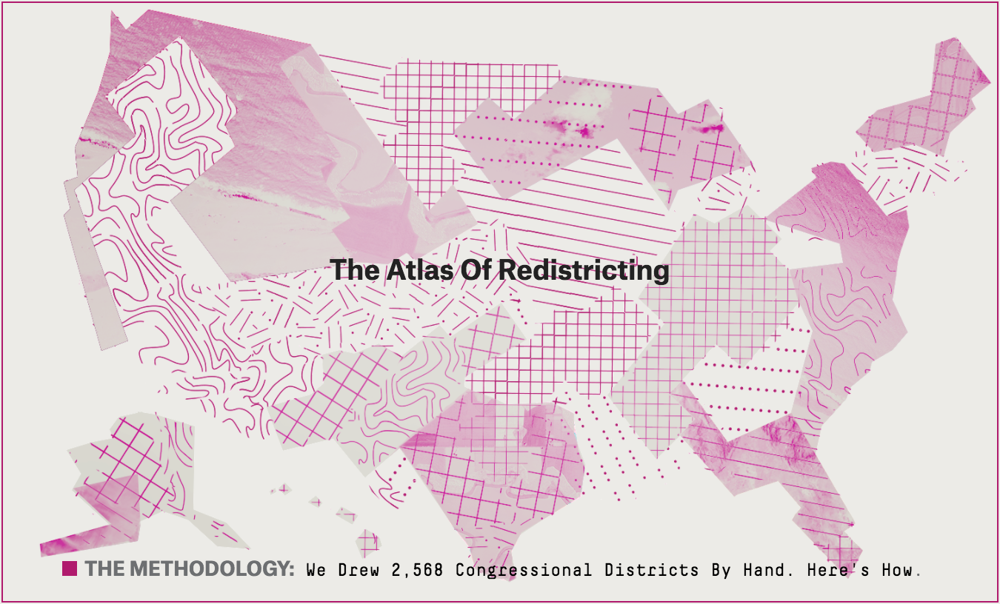

Meg Hess-Homeier is a city planning student at MIT. She has nine years of experience in education program management, including after school program management and school operations management. Meg has also hiked the Pacific Crest Trail and sometimes composes spontaneous poems about the magic of ultralight backpacking and long distance hiking.
Five Thirty Eight has a ton of cool data visualizations but their Atlas of Redistricting is particularly inspiring. The project allows users to explore different districting scenarios either at a national or state scale. The project highlights the challenges of districting, specifically, that while condemning gerrymandering is easy developing a new districting scheme is difficult.
